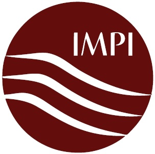

May 23-24, 2013
Padua, Italy
Organized by
IMMG, CIMS, Department of Mathematical Science, WPI
In cooperation with
Society for Industrial and Applied Mathematics (SIAM)
In partnership with
GIMAMP – Italian Group for Microwave Application to Materials and Processing
National Secretariat :
Microwave Application Group (MAG),
Department of Materials and Environmental Engineering,
University of Modena & Reggio Emilia, Modena, Italy
Endorsed by
Sponsored by
| QWED Sp. z o.o. | SAIREM SAS |
 |
Vadim V. Yakovlev, IMMG, WPI
Fabrizio Dughiero, University of Padua, Italy
Cristina Leonelli, University of Modena & Reggio Emilia, Italy
Erin Kiley, IMMG, WPI
Didier Bouvard, INP-Grenoble, France
José M. Catalá-Civera, Polytechnic University of Valencia, Spain
Marilena Radoiu, SAIREM, Neyron, France
Paolo Veronesi, University of Modena & Reggio Emilia, Italy
Suzanne Weekes, WPI, USA (SIAM representative)
Monika Willert-Porada, University of Bayreuth, Germany
This year's Seminar will be organized as a satellite event to HES-13, the International Conference on Heating by Electromagnetic Sources.
The conference and the Seminar will be held at the Centro Congressi Padova "A. Luciani" in Padua, Italy.
Computer modeling and simulation are increasingly important for development of new applications and technologies of microwave power engineering. To be accurate and adequate, the models have to mimic not only electromagnetic processes in the system, but also other physical phenomena involved - such as heat transfer, mass transfer, evaporation, phase change, etc.
This interdisciplinary forum will bring together engineers, researchers and students involved in different areas of microwave power engineering and engaged with the development and the use of suitable numerical techniques, computational schemes, modeling/optimization procedures, etc. The seminar program will include contributions from both academia and industry that exemplify advantages and benefits of computer models for simulation, exploration, and CAD of microwave applicators.
Aiming to illuminate the modern trends in evolution of computational technologies applicable to a variety of scenarios in microwave power engineering, contributions to the topics including (but not limited to) the following are invited:
Technical sessions will take place in the morning and in the afternoon of Friday, May 24. Presentations given by the Seminar Sponsors will follow the afternoon technical session.
The HES-13 Gala Dinner is scheduled for the evening of Thursday, May 23.
The Seminar Dinner will be organized to conclude the Seminar on the evening of Friday, May 24.
| Submission of titles and abstracts: | April 5, 2013 |
| Notification of acceptance: | April 16, 2013 |
| Submission of summaries: | April 22, 2013 |
| Preliminary program: | May 3, 2013 |
| Seminar & Final program: | May 23-24, 2013 |